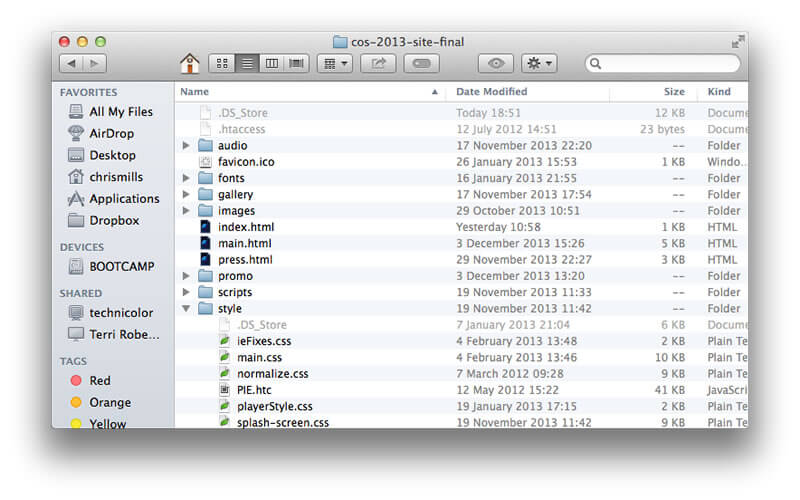
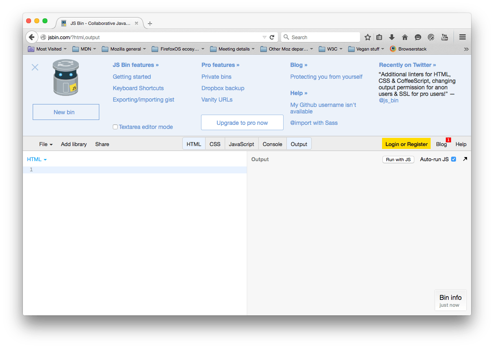

Introducing our tools
Basic practical web design Lesson 1
In this part of the course we will examine the tools we are going to use in learning to build websites.
JSBin fundamentals
In this course we'll be typing code into a web site called JSBin - follow the link now. This is a simulation of a web site, all conveniently stored in the same web page, so we can easily add different types of code and see how they will react together.
Normally, to see the same result you'd have to have to create your own HTML, CSS, JavaScript, etc. files, and load the HTML file in the browser. But here we're not interested in the architecture of web sites. We want to explore website coding fundamentals as easily and painlessly as possible, so we're going to use this environment to cut out some of the clutter.
When you first load JSBin, you'll see two separate "panes" — HTML and Output.
We will want to make use of the CSS and eventually JavaScript panes, but for now what we've got will do. The HTML pane is where we type in HTML code. JSBin then renders that code in the Output pane, to show you the results of your code.
You'll also see a panel at the top of the window with a lot of options in. This can be hidden by pressing the X in the top left corner, and reshown by pressing the little Robot icon. You don't need this for now, so hide it before continuing.
The console pane is used for checking and debugging your code. Don't worry too much about this for now.
You'll also notice, when typing in code in the different panes, that it gives you messages to tell you what is wrong with your code. This is rather useful!
When you create a new page in JSBin, it gives your code a unique web address that you can give to other people to check out your demo. Try my example, at http://jsbin.com/ikuber/2/edit. You can then click the JSBin button in the top left corner, and choose to clone the example, so you can make edits to your own copy, work together one the same page with a friend or two, and even download it as a working HTML page.
We've just done some web coding! Let's do a few more bits of coding, to get you used to how it all works.
Coding basics
Now let's have a look at the different types of code we will use in our course, and how to work with them inside JSBin.
HTML
HTML is a markup language that defines the structure of your website content, and the job each bit of content does (for example, is it a heading, is it a paragraph, etc.) If a website were a house, HTML would be the bricks, wood, etc. that the structure is built out of. HTML is what you put in the JSBin HTML pane.
Essentially, HTML works in a similar way to a Microsoft Word document. When you make your text into a paragraph or insert an image in your document, you are using markup.
HTML generally works by wrapping content in tags. In each case, the opening tag (for example <p>) states where the effect is starting, and the closing tag (for example </p>) states where the effect stops. The opening tag plus the content inside it plus the closing tag is called an element. There's a few HTML elements that work slightly differently to this, but we'll get to those later.
The main parts of the document are as follows:
- The DOCTYPE: this is the bit at the very top that reads
<!doctype html>, and always has to go at the top of your HTML documents, for various complex reasons. It is kind of like a ruleset that defines the rules the HTML document should follow. - The head: The head of the document is everything in between the
<head>and</head>tags. This is basically where all of the setup or configuration information about your web page goes, such as its author, styling information, descriptive keywords, etc. - The body: The body of the document is everything in between the
<body>and</body>tags. This is where you put everything that you want to appear on your web page.
Let's try writing a little bit of HTML to get the hang of things. Try copying and pasting the following code into the HTML pane, replacing what is currently there. You can vary the text inside the tags as much as you like, but the tags have to stay the same.
<!DOCTYPE html>
<html>
<head>
<title>My food page</title>
</head>
<body>
<h1>My website is all about food</h1>
<p>I <strong>love</strong> food. It is what I look forward to
<em>every</em> morning, lunchtime and evening. My favourite foods are covered in the sections below.</p>
<h2>Cheese</h2>
<img src="http://venturebeat.files.wordpress.com/2010/05/
cheese_oh_cheese.jpg" alt="a piece of cheese">
<p>Let's start with cheese. Cheeses are like an international culture
trip, with every country having its own famous varieties.</p>
<p>For more information on cheese, go to
<a href="http://www.cheese.com/">Cheese.com</a></p>
</body>
</html>CSS
CSS is the main technology you can use to affect how your web pages look, so fonts, colours, spacing, animation, etc. Returning to our house analogy, CSS is like the paint, carpets, wallpaper, and other things you use to get your house looking nice.
CSS works on the basis of rules. A rule has a selector, which specifies which element, or elements you are selecting to be styled. You then give your rule one or more declarations, each one of which states a property of the selected elements you want to change, and a value to change that property to. Let's add an example to our page.
Open up the JSBin CSS pane, and enter the following into it:
h1 {
color: blue;
}Now let's try adding a few more declarations to make it more fun:
h1 {
color: blue;
font-size: 30px;
background-color: yellow;
border-radius: 10px;
border: 2px solid green;
padding: 10px;
}Note the american spellings. They are necessary, otherwise your code won't work.
You can change the colours and other properties, or even apply this styling to a different element or elements by changing the h1 to something else.
JavaScript for interactivity
JavaScript is the thing you use to add interactivity and advanced features to your website. In the house analogy, JavaScript would be like the cool functional stuff in your house, like the TV, the PS4, or the Microwave oven! JavaScript works in a similar way to CSS in some respects, although it is a lot more complex and flexible. You can select elements on the page and change things about them, but you can do so much more.
Try putting the following in the JSBin JavaScript pane, then click the main heading with your mouse pointer and see what happens! If it doesn't work, try pressing the "Run with JS" button on the output pane and trying again.
var mainTitle = document.querySelector('h1');
var thePage = document.querySelector('html');
mainTitle.onclick = function() {
var myPrompt = prompt('Enter a new background colour');
thePage.style.backgroundColor = myPrompt;
};Choosing a project
At this point, I'd like you to start having a think about what you'd like to do a website about. What are you interested in? What do you find fun? It could be Football, or Minecraft, or Animals, or Fashion, or whatever you like. Think of a few paragraphs of text, and some pictures.
You can find a useful guide to planning a website on Thimble. This may well be a good help when you are thinking about what you want to do a web site about. You can also read a good little quick guide to Designing for the Web.
Saving your work
JSBin automatically saves a copy of your work at a specific web address. The easiest way to find it is to press the "Share" button at the top of the JSBin window, then make a copy of the web address under "Output only (with live reload)". Write this down on a piece of paper and keep it safe, or give it to me to look after.

This work is licensed under a Creative Commons Attribution 4.0 International License. Share it, make it better, use it for good.